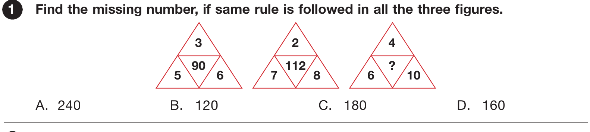
Find the missing number, if same rule is followed in all the three figures.
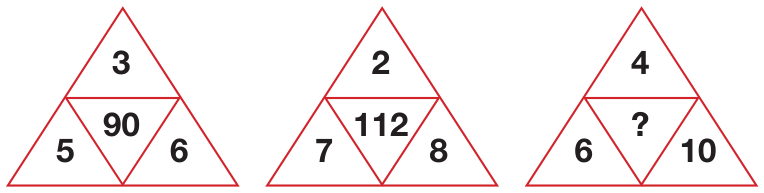
240
120
180
160
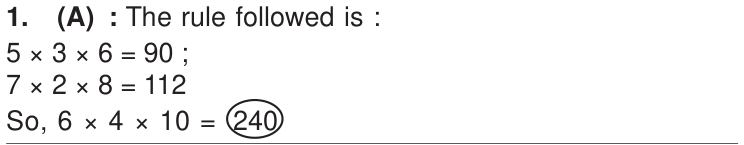
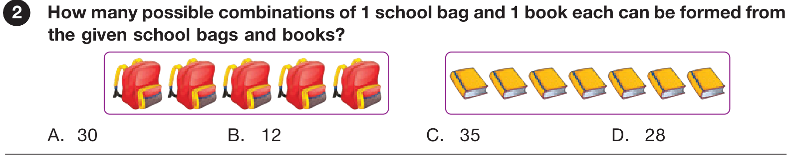
How many possible combinations of 1 school bag and 1 book each can be formed from the given school bags and books?
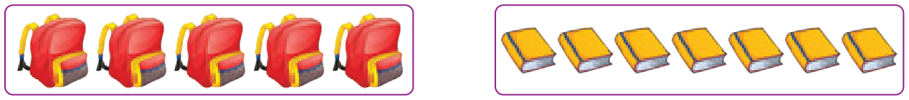
30
12
35
28
Number of school bags = 5
Number of books = 7
So, number of possible combinations = 5 × 7 = 35
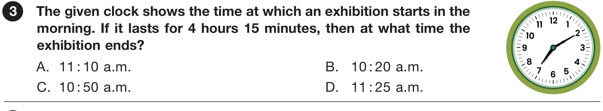
The given clock shows the time at which an exhibition starts in the morning. If it lasts for 4 hours 15 minutes, then at what time the exhibition ends?
11 : 10 a.m.
10 : 20 a.m.
10 : 50 a.m.
11 : 25 a.m.
Time at which the exhibition starts = 7 : 10 a.m. Time at which the exhibition ends = 4 hrs 15 mins after 7 : 10 a.m. i.e., 11 : 25 a.m.
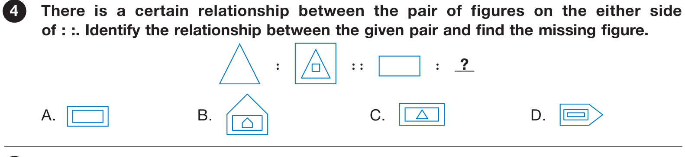
There is a certain relationship between the pair of figures on the either side of : :. Identify the relationship between the given pair and find the missing figure.
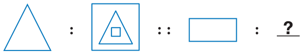
In the left pair, from first figure to second figure, shapes having one more side is added inside as well as outside of the first figure.
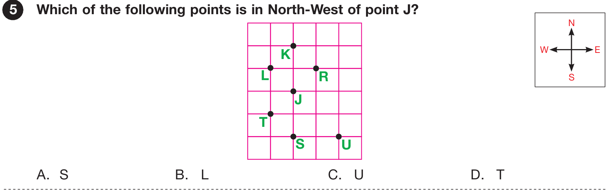
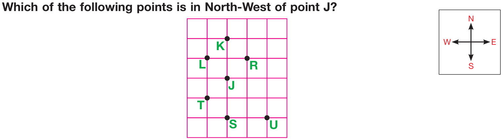
S
L
U
T
Point L is in North-West of point J.
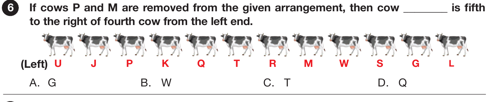
If cows P and M are removed from the given arrangement, then cow ________ is fifth to the right of fourth cow from the left end.
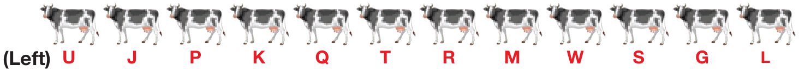
G
W
T
Q
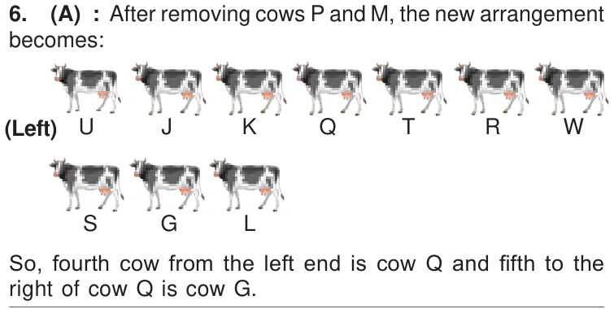
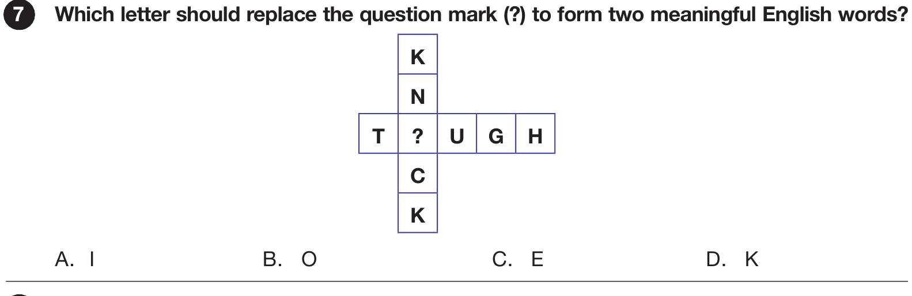
Which letter should replace the question mark (?) to form two meaningful English words?
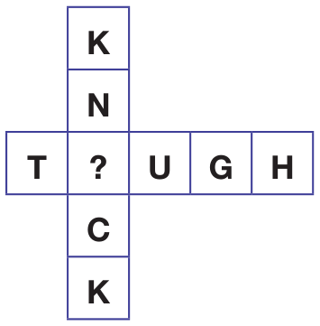
I
O
E
K
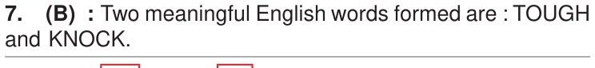
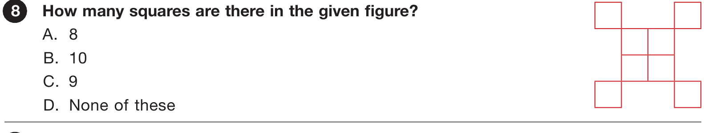
How many squares are there in the given figure?
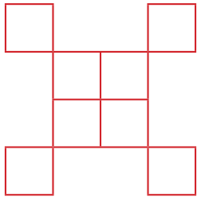
8
10
9
None of these
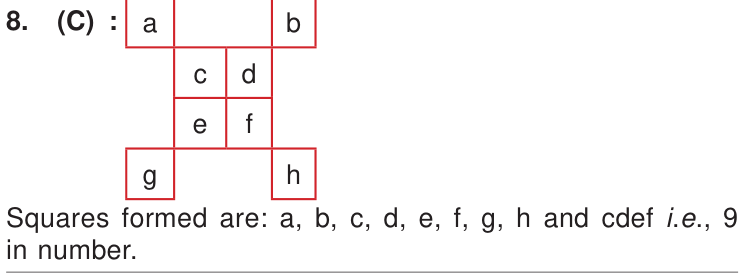
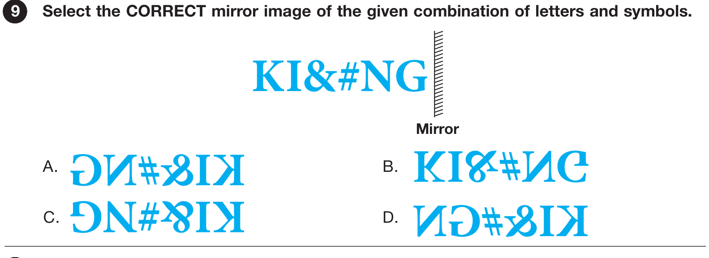
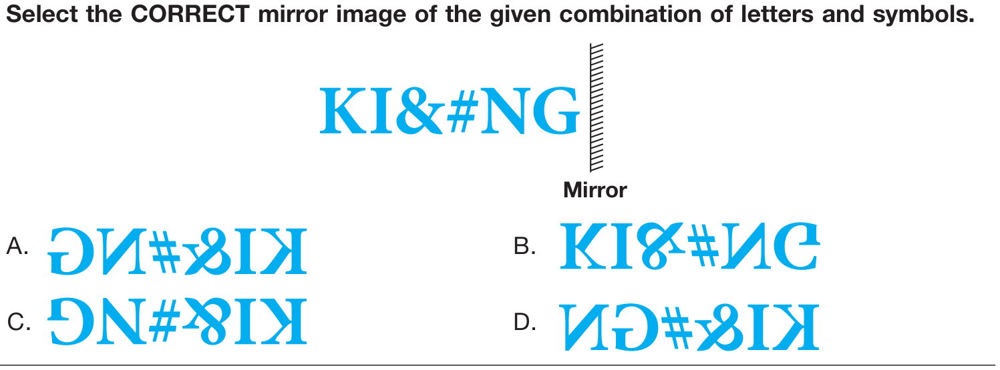
Option A
Option B
Option C
Option D
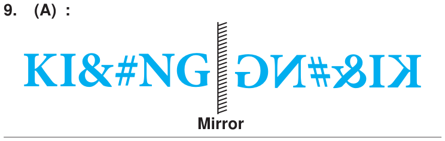
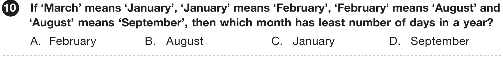
If ‘March’ means ‘January’, ‘January’ means ‘February’, ‘February’ means ‘August’ and ‘August’ means ‘September’, then which month has least number of days in a year?
February
August
January
September
February has least number of days in a year but January means February.
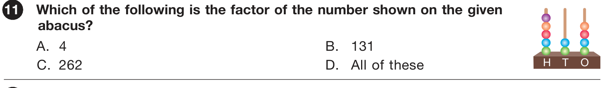
Which of the following is the factor of the number shown on the given abacus?
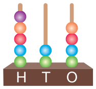
4
131
262
All of these
Number shown on the abacus = 524 As, 524 is completely divisible by 4, 131 and 262. So, 4, 131 and 262 all are factors of 524.
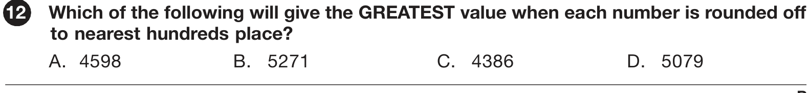
Which of the following will give the GREATEST value when each number is rounded off to nearest hundreds place?
4598
5271
4386
5079
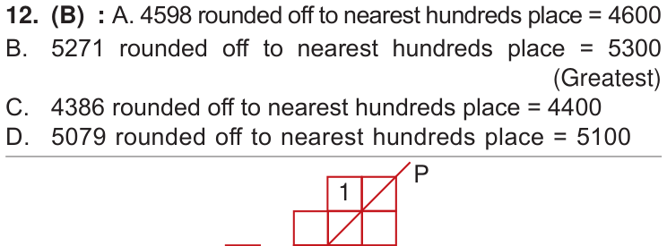
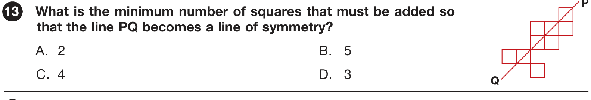
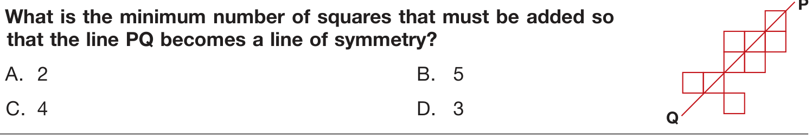
Option A
Option B
Option C
Option D
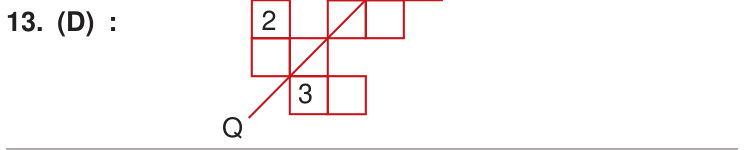
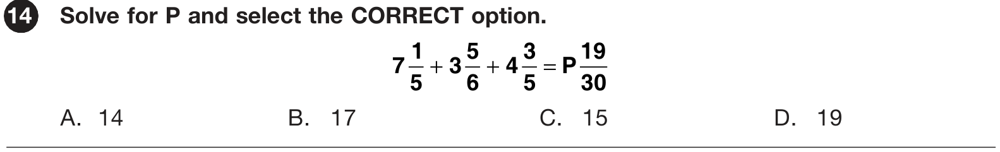
Solve for P and select the CORRECT option.
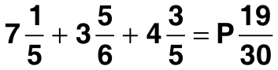
14
17
15
19
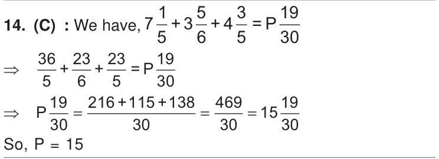
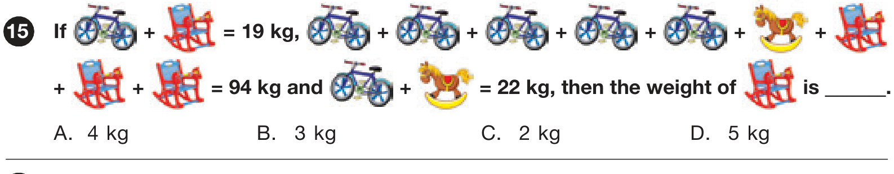
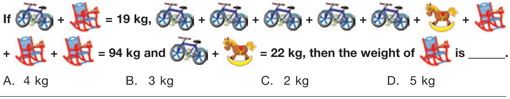
Option A
Option B
Option C
Option D
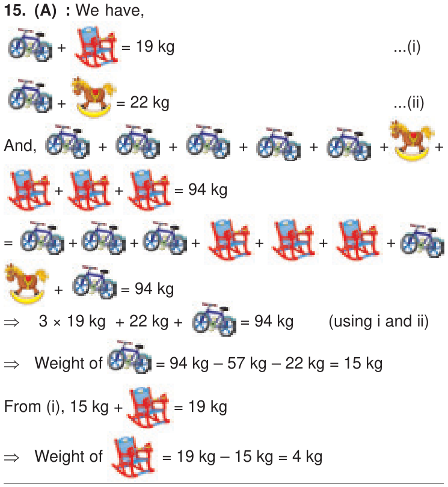
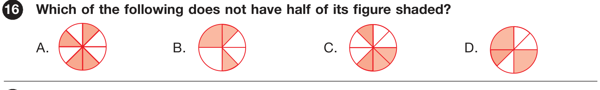
Which of the following does not have half of its figure shaded?
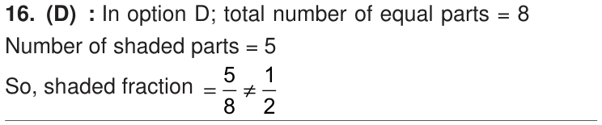
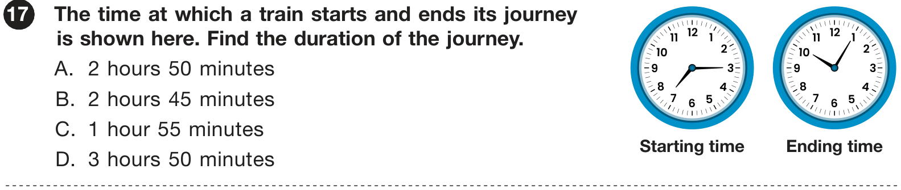
The time at which a train starts and ends its journey is shown here. Find the duration of the journey.
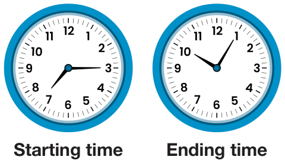
2 hours 50 minutes
2 hours 45 minutes
1 hour 55 minutes
3 hours 50 minutes
Starting time = 7 : 15
Ending time = 10 : 05
So, duration of journey = 2 hours 50 minutes
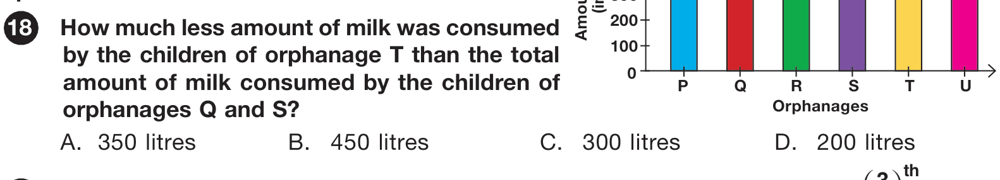
DIRECTIONS (18-19) : The given bar graph shows the amount of milk consumed by the children of six orphanages in a particular month. Study the given bar graph carefully and answer the following questions.
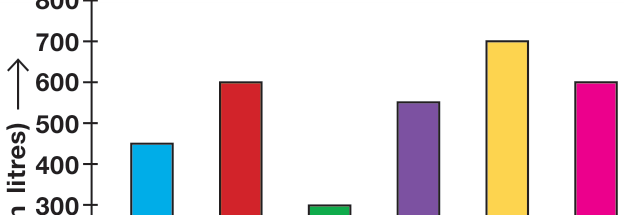
How much less amount of milk was consumed by the children of orphanage T than the total amount of milk consumed by the children of orphanages Q and S?
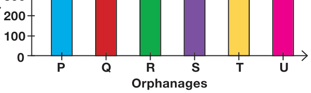
350 litres
450 litres
300 litres
200 litres
Quantity of milk consumed by the children of orphanage T = 700 litres
Total quantity of milk consumed by the children of orphanages Q and S = 600 + 550 = 1150 litres
∴ Required difference = (1150 – 700) litres = 450 litres
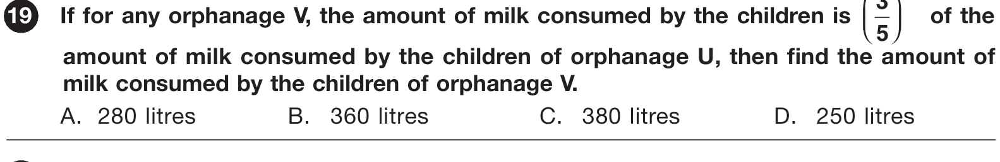
DIRECTIONS (18-19) : The given bar graph shows the amount of milk consumed by the children of six orphanages in a particular month. Study the given bar graph carefully and answer the following questions.
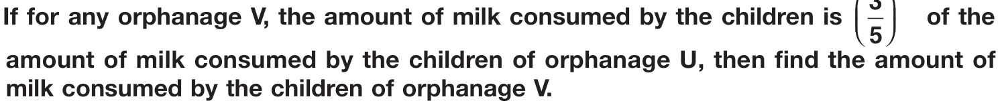
280 litres
360 litres
380 litres
250 litres
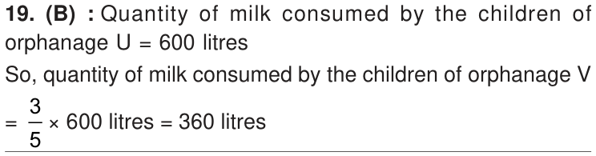
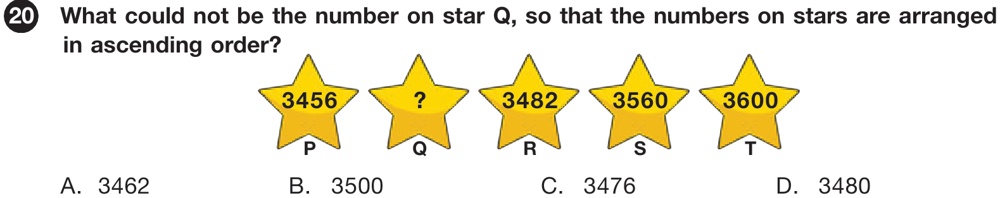
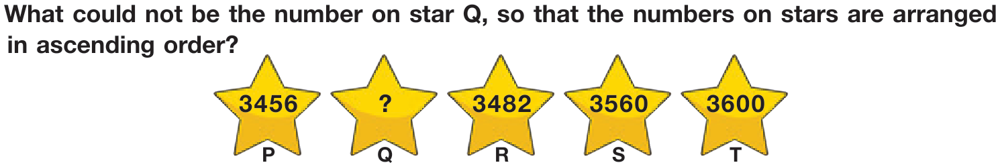
3462
3500
3476
3480
Number of star Q must be greater than 3456 and less than 3482.
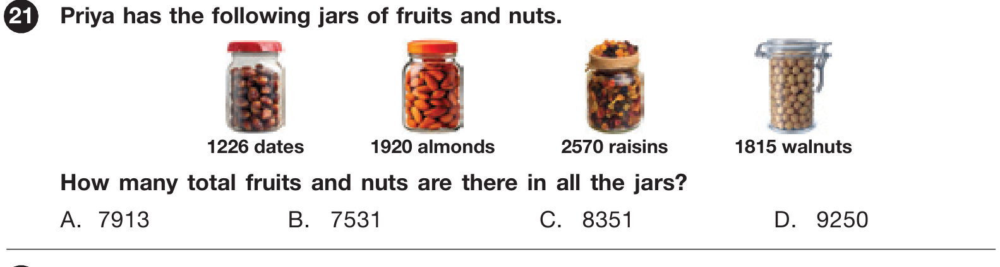
Priya has the following jars of fruits and nuts.
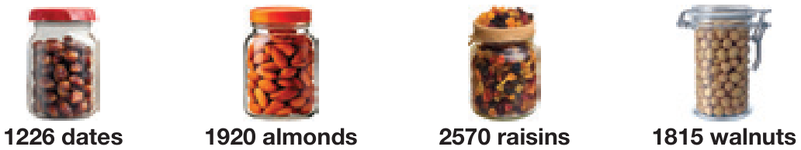
How many total fruits and nuts are there in all the jars?
7913
7531
8351
9250
460 people visited a zoo on Saturday and 355 people visited the zoo on Sunday. If total number of men who visited the zoo on these two days is 315, then find the fraction of people who visited the zoo in these two days are not men.
None of these
Rohit packed 4375 cookies into packets of 5. He sold them at ₹ 13 per packet. How much total amount did he get?
₹ 11785
₹ 13590
₹ 4780
₹ 11375
Total number of cookies = 4375
Number of cookies in 1 packet = 5
So, number of packets formed = 4375 ÷ 5 = 875 Now, cost of each packet = ₹ 13
So, total amount he gets = ₹ (13 × 875 ) = ₹ 11375
Option A
Option B
Option C
Option D
Breadth of rectangle = 15 cm
So, length of rectangle = 3 × 15 = 45 cm
∴ Total length of rope used = 2 (length + breadth) = 2 (15 + 45)
= 120 cm
On the occasion of kite festival, three friends Mayank, Puneet and Sachin sold 15890, 27183 and 18595 kites respectively. Who sold maximum number of kites?
Sachin
Mayank
Puneet
Can’t say
As, 15890 < 18595 < 27183
So, Puneet sold maximum number of kites.
For a sports academy, the coach bought 15 tennis balls, 7 basketballs, 8 footballs and 10 shuttlecocks. Find the fraction of number of shuttlecocks bought to the total number of items bought.
A restaurant can accommodate 5200 guests. If there are 1205 adults and 1820 children in the restaurant, then how many more guests can be accommodated in the restaurant?
2175
2792
1854
1967
Number of guests that can be accommodated in the restaurant = 5200
Number of guests that are in the restaurant = 1205 + 1820 = 3025 So, number of more guests that can be accommodated in the restaurant = 5200 – 3025 = 2175
Mr. Sharma put 4 kg 150 g apples, 5 kg 830 g oranges and 3 kg 70 g mangoes in an empty fruit basket. If the total weight of fruits and empty basket is 14 kg 400 g, then find the weight of empty basket.
1 kg 350 g
1 kg 425 g
1280 g
None of these
Total weight of empty basket and fruit = 14 kg 400 g Total weight of fruits = 4 kg 150 g + 5 kg 830 g + 3 kg 70 g = 4150 g + 5830 g + 3070 g = 13050 g = 13 kg 50 g
So, weight of empty basket = 14 kg 400 g – 13 kg 50 g
= 1 kg 350 g
The distance between city X and city Y when rounded off to nearest thousands is 5000 km. Which of the following is the possible actual distance between the two cities?
4294 km
6103 km
4145 km
4782 km
A. 4294 rounded off to nearest thousands = 4000 B. 6103 rounded off to nearest thousands = 6000
C. 4145 rounded off to nearest thousands = 4000
D. 4782 rounded off to nearest thousands = 5000
So, the possible actual distance between city X and city Y is 4782 km.
Priyanka uses 18 tomatoes to make half litre of tomato sauce. How many tomatoes does she need to make 5 litres of tomato sauce?
120
155
135
180
Sonali, Sneha and Mahira get ₹ 2500, ₹ 1900 and ₹ 2050 respectively from their parents for the party. They bought the following items for the party.
Who among the following was left with the least amount?
Mahira
Sonali
Sneha
Can’t say
• Amount of money Sonali has = ₹ 2500
Amount of money she spent = ₹ (350 + 410 + 780) = ₹1540 So, amount of money left with her = ₹ (2500 – 1540) = ₹ 960
• Amount of money Sneha has = ₹1900
Amount of money she spent = ₹(485 + 305 + 290) = ₹1080 So, amount of money left with her = ₹(1900 – 1080) = ₹ 820
• Amount of money Mahira has = ₹ 2050
Amount of money she spent = ₹ (550 + 380 + 650) = ₹1580 So, amount of money left with her = ₹ (2050 – 1580) = ₹ 470 Now, ₹ 960 > ₹ 820 > ₹ 470
So, Mahira left with the least amount.
M and T ₹ 4550
J and P ₹ 4900
T and J ₹ 5130
J and P ₹ 5250
F T F
F F T
T T F
T F T
(i) True; CMXCIX = 900 + 90 + 9 = 999
So, 999 rounded off to nearest hundreds place becomes 1000.
(ii) False; Greatest 5-digit number that can be formed by using 3, 0, 4 and 8 (using each digit at least once)
= 88430 i.e., Eighty eight thousand four hundred thirty
(iii) True
(i) : 3; (ii) : 2
(i) : 4; (ii) : 2
(i) : 3; (ii) : 4
None of these
Only Yukti
Both Yukti and Niharika
Both Rashi and Yukti
All of them